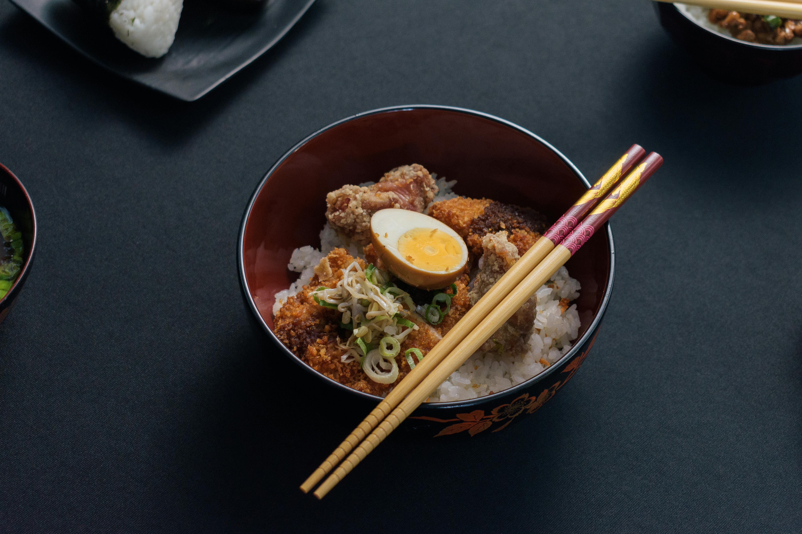
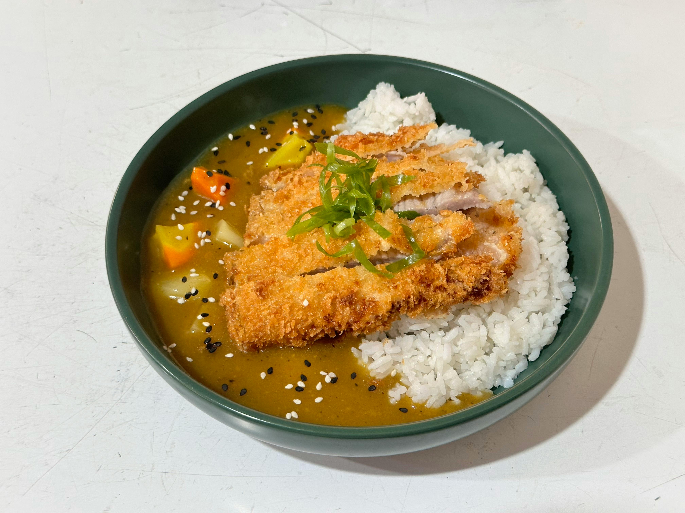
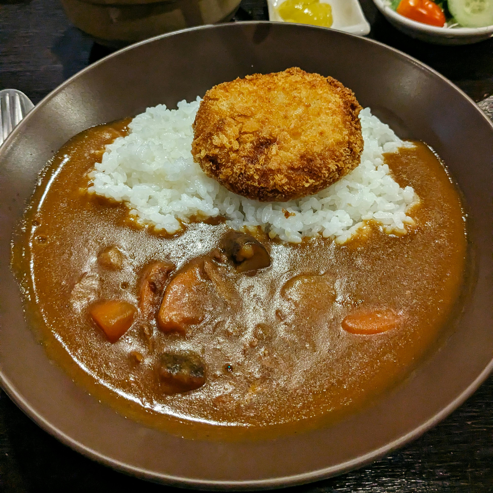
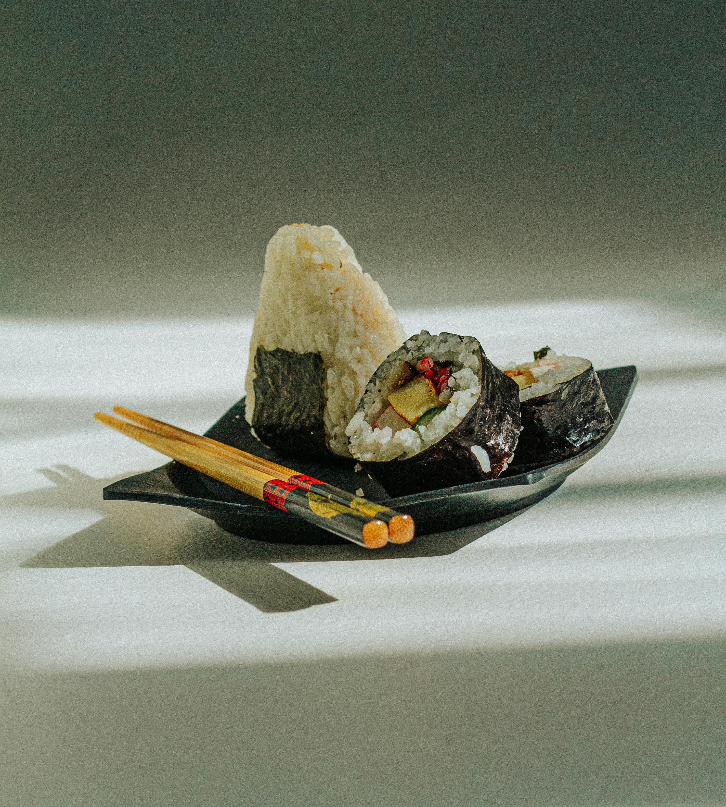
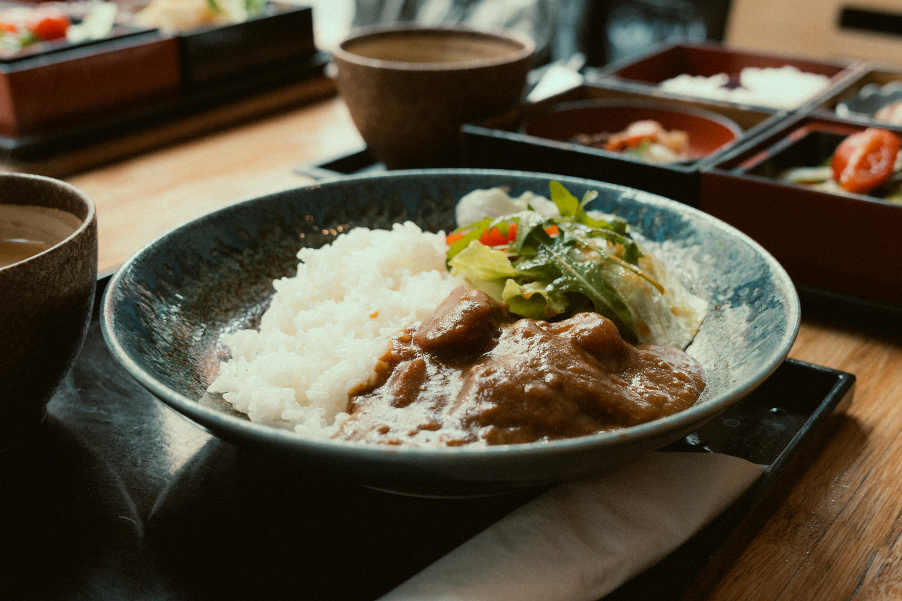

The Tasty Yum Yum







tasty world
Japan is a nation of compelling contrasts, where ancient traditions
coexist with futuristic technology. This duality is deeply woven
into the fabric of its society, from its people's daily
interactions to its world-renowned culinary arts. Understanding
Japan means looking at the values that shape its people and the
philosophy they bring to their food.
The people of Japan, known as Nihonjin, are largely guided by a
cultural emphasis on harmony (wa 和), respect, and the
importance of the group. This is visible in their legendary
politeness and the value placed on not inconveniencing others.
Society often operates on the principles of honne (one's true
feelings) and tatemae (the public face or behavior expected in a
situation), a social lubricant that ensures smooth interactions.
There is a profound respect for diligence and craftsmanship,
encapsulated in the concept of the shokunin (artisan). A
shokunin is not just a master of their craft but someone who
approaches their work with a spiritual and social consciousness,
striving for perfection in everything from sword-making to sushi
preparation. This meticulous attention to detail and pursuit of
excellence is a defining characteristic of Japanese culture.
Japanese food culture, or washoku (和食), is a UNESCO Intangible
Cultural Heritage that reflects the nation's reverence for
nature. At its core, washoku emphasizes seasonality, balance,
and beautiful presentation. The "rule of five"—incorporating
five colors (black, white, red, yellow, green), five tastes
(sweet, sour, salty, bitter, umami), and five cooking techniques
(raw, grilled, steamed, boiled, fried)—guides the creation of a meal
that is both nutritionally balanced and aesthetically pleasing.
Rice and fresh seafood are the cornerstones of the diet. Iconic
dishes like sushi and sashimi showcase a minimalist philosophy,
highlighting the pure, natural flavor of the ingredients. Ramen,
a noodle soup with countless regional variations, offers a
comforting and complex bowl of flavor, while tempura
demonstrates the art of light, crisp frying that enhances the
taste of vegetables and seafood without overwhelming them.
Dining is a mindful experience. The phrase itadakimasu is said
before eating to express gratitude for the food and everyone
involved in bringing it to the table. This simple act
encapsulates the deep connection between the people, their food,
and the natural world, making every meal a celebration of
balance, artistry, and respect.





Japanese cuisine, or `washoku`, is celebrated
worldwide for its elegance, precision, and
deep respect for fresh, seasonal
ingredients. It’s a culinary art form where
balance, texture, and presentation are as
important as taste.
Among its most iconic dishes is
**sushi**, a masterful combination of
vinegared rice paired with ingredients like
raw seafood, vegetables, and nori
(seaweed). Its cousin, **sashimi**, is even
simpler, featuring expertly sliced raw fish
served on its own, a true testament to the
quality of the main ingredient. The skill
of the sushi chef, or *itamae*, is
paramount in creating these exquisite bites.
For a heartier, comforting meal,
nothing compares to **ramen** 🍜. This
beloved noodle soup features a rich,
complex broth—often made from pork bones
(`tonkotsu`), soy sauce (`shoyu`), or
fermented soybean paste (`miso`). The broth
is served with chewy noodles and an array
of toppings like sliced pork (`chashu`), a
soft-boiled egg, and seaweed. Each region
of Japan boasts its own unique style,
making ramen a universe of flavor to explore.
Another globally famous dish is
**tempura**. This involves coating seafood
and vegetables in a remarkably light, airy
batter and deep-frying them to golden
perfection. Unlike other fried foods, great
tempura is delicate and crisp, enhancing
the natural flavor of the ingredient
without being greasy.
From savory grilled skewers of
**yakitori** (chicken) to hearty bowls of
**udon** noodles, Japanese food offers a
profound and delicious journey into a
culture that treats every meal as a work of art.
Japan is also known for it's animation also known as anime. Anime is a term for Japanese animation, a vibrant
and dynamic art form that has captivated audiences across the globe. Far from being just a children's cartoon,
anime encompasses a vast array of genres, styles, and narratives, often exploring complex and mature themes
with a depth rarely seen in Western animation. Its most recognizable feature is its distinct visual style, characterized
by large expressive eyes, colorful hair, and meticulously detailed backgrounds, which creates a look that is both
unique and artistically compelling.
The global popularity of anime can be attributed to several key factors. First and foremost is its diverse and sophisticated
storytelling. Anime creators are not afraid to tackle deep subjects like mortality, war, psychological trauma, and philosophical
questions. Series like Attack on Titan or Neon Genesis Evangelion offer intricate plots and profound character development
that resonate strongly with adult viewers, treating animation as a serious medium for powerful narratives.
Furthermore, the sheer breadth of genres ensures there is something for everyone. Whether you enjoy high-fantasy adventures
(Fullmetal Alchemist), futuristic sci-fi (Cowboy Bebop), heartwarming romances (Your Name), or intense sports dramas
(Haikyuu!!), there is an anime series or film that caters to that interest. This diversity breaks the stereotype that animation is
a single genre and invites a much wider audience.
Finally, the rise of the internet and dedicated streaming platforms like Crunchyroll and Netflix has been crucial. They made
anime instantly accessible to a global audience, breaking down the barriers of distribution that once kept it a niche hobby.
This accessibility, combined with a passionate global fan community that shares art, discussions, and cosplay, has transformed
anime from a Japanese cultural export into a worldwide cultural phenomenon, celebrated for its creativity, emotional depth,
and unique artistic vision